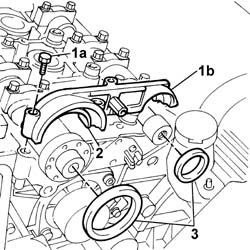
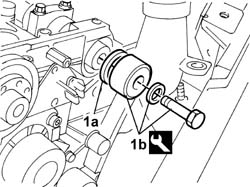
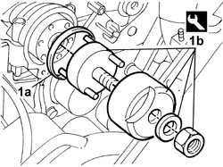

1036C30 FRONT OIL SEAL for camshaft in cylinder head - replace with timing belt removed
- Path
- Procedures > 10 ENGINE > 1036 TIMING SYSTEM > 1036C CAMSHAFTS (2) IN CYLINDER HEAD (1) > 1036C30 FRONT OIL SEAL for camshaft in cylinder head - replace with timing belt removed
- Kind
- repair procedure (removal / refitting; the operation number is the code)
- Applies to
- engines: 2.0 TB, 2.4 20V; all production periods
- Interactive page
- https://sloeber94.github.io/elrnDB-lThss/en/#/91862
Applies to: engines: 2.0 TB, 2.4 20V; all production periods
 Removing
Removing
 Refitting
RefittingSee in Op. 1032B40 TOOTHED DRIVEN PULLEY (one) - R.R. with timing belt removed
- Undo the bolts fixing the cam angle sensor to the camshaft front cap.
1. Undo the bolts (1a) and remove the camshaft front cap (1b).
2. Remove the inlet side camshaft front supper upper half-bearing.
3. Remove the camshaft front oil seal (exhaust side and inlet side).

Applies to: engines: 2.0 TB, 2.4 20V; all production periods
Refitting
Removing- Place the inlet side camshaft front upper upper half-bearing in its housing.
- Place the camshaft front cap back in its housing and secure it tightening the bolts to the recommended torque.
 | Value - daNm | Fastening | Component | Ø |
|---|---|---|---|---|
. | 1.5 | Bolt | CAMSHAFT CAPS | M7 |
- For the exhaust side camshaft oil seal.
1. Fit the new exhaust side camshaft front oil seal (1a) using the tool (1b).
 | Description | Code | Function |
|---|---|---|---|
1b | Fitting tool | 1.860.824.000 | Tool for fitting crankshaft front oil seals |

Applies to: engines: 2.0 TB, 2.4 20V; all production periods
- For the inlet side camshaft oil seal.
1. Fit the new inlet side camshaft front oil seal (1a) using the tool (1b).
| Description | Code | Function |
|---|---|---|---|
1b | Fitting tool | 1.860.844.000 | Tool for fitting front oil seals to |

Applies to: engines: 2.0 TB, 2.4 20V; all production periods
- Tighten the bolts fixing the cam angle sensor to the camshaft front cap.
See in Op. 1032B40 TOOTHED DRIVEN PULLEY (one) - R.R. with timing belt removed